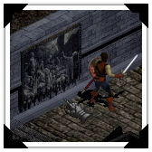

Email •
Email •
 LinkedIn •
LinkedIn •
 GitHub •
Bandcamp •
GitHub •
Bandcamp •
 Blog
Blog
Games
|  |
Pre-abloA mod of the Diablo Pre-release Demo to fix crashes and make it more playable. Technologies: Assembly, C++, Devilution, Windows |
Get Away From My Cake!An arcade FPS inspired by Devil Daggers. Made in a month for CS 488 at UWaterloo. While playable, more time was spent on the graphics to meet project criteria. Technologies: C++11, OpenGL, SDL |
 |
 |
Hangman!The game where you have limited tries to guess a word letter by letter. Made in around 72 hours for a hackathon at BlackBerry in 2015. Technologies: Java, Android SDK |
ICCC (LD30)A strategy game that involves constructing a network to unite countries on a fictional map. Made in 72 hours for Ludum Dare 30. Technologies: Lua, LOVE |
 |
 |
Evolution is the Key (LD24)An exploration of the evolution of video games from Zork to to Rogue to Ultima to Binding of Isaac. Made in 72 hours for Ludum Dare 24. Scored #2 in Theme, #3 in Innovation. Technologies: Java, Lightweight Java Game Library, OpenGL |
Sheet Music
All transcriptions (Video, PDF, and MIDI) are licensed under the Creative Commons Attribution 4.0 International License.
Suggested attribution format (click to expand):
[insert title here]
Transcription by Michael Hitchens (michaelhitchens.com)
Licensed under Creative Commons Attribution 4.0 International License
http://creativecommons.org/licenses/by/4.0/
For a higher resolution Video file, reach out using the email address at the top of the page.

| Title | Artist | From | Video | MIDI | |
|---|---|---|---|---|---|
| Das Wandern | Kajiura Yuki | .hack//SIGN | Video | MIDI | |
| The Bones of Jakobson | Jessica Curry | Dear Esther | Video | MIDI | |
| Dear Esther | Jessica Curry | Dear Esther | Video | MIDI | |
| I Have Begun My Ascent | Jessica Curry | Dear Esther | Video | MIDI | |
| Golden Ratio | Jessica Curry | Dear Esther | Video | MIDI | |
| Remember | Jessica Curry | Dear Esther | Video | MIDI | |
| Standing Stones | Jessica Curry | Dear Esther | Video | MIDI | |
| This Godforsaken Aerial | Jessica Curry | Dear Esther | Video | MIDI | |
| Twenty One | Jessica Curry | Dear Esther | Video | MIDI | |
| The Earth Prelude | Ludovico Einaudi | Divenire | Video | MIDI | |
| Opening | Phillip Glass | Glassworks | - | MIDI | |
| Home | Disasterpeace | FEZ | - | MIDI | |
| Board Up the Windows | Jessica Curry | Korsakovia | Video | MIDI | |
| The Event | Jessica Curry | Korsakovia | Video | MIDI | |
| Wet Hands | C418 | Minecraft | Video | MIDI | |
| Outlier | 65daysofstatic | No Man's Sky | - | MIDI | |
| Machiavellian Bach | Mike Morasky | Portal 2 | - | MIDI | |
| L'Apotre de la Lune | Sagisu Shiro | Rebuild of Evangelion | Video | MIDI | |
| Quelconque 103 (piano) =3EM08= | Sagisu Shiro | Rebuild of Evangelion | Video | MIDI | |
| Overworld (Night) | Kozue Ishikawa | Wario Land 3 | Video | MIDI | |
| Goodnight | Evanescence | Blitz Locals (Charity) | - | MIDI |
eBooks
| Title | Description | Download |
|---|---|---|
| Dear Esther | Script for Dear Esther | ePub |
| Korsakovia | Script for Korsakovia | ePub |
Other Projects
This Website
Made from scratch to be lean and simple. Handwritten HTML and CSS, no frameworks.
Vampyr Utils
Utilities for decoding various files used by Vampyr: The Talisman of Invocation. Coded in C++. I used these utilities to decode the image and map files which I then put into albums; I've provided links below.
Source • Image album • Map album